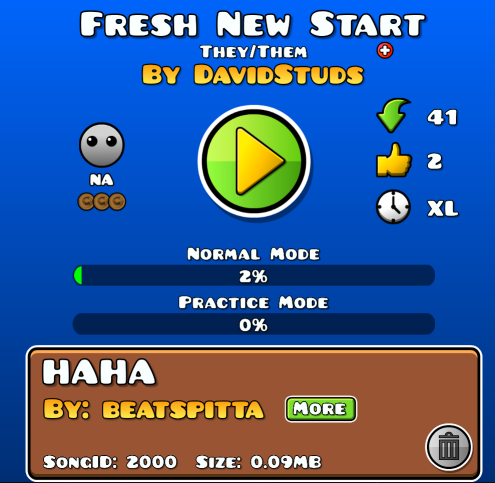

Got inspired by Devin2003 (the level) so I decided to make this clusterfuck of a masterpiece but with a slight twist:
The level's supposed to take you some sort journey.
In other words, I have released a new level called Fresh New Start on a new account!!!!!!1 Waow!!!
ID: 129033542
Song: "Crow Song" - Sanguinarius
Objects: ~276K
P.S.: Make sure to replace the song ID provided (2000) to the song above.
(and also just to be clear, i don't expect this to be rated since this level uses a NONG song, thank you very much)
oh yea i'm still unsure if i wanna add a RSS feed for the GD levels page, but FNS should be at that page if you wanna see a video if it
- David ₍^. .^₎⟆